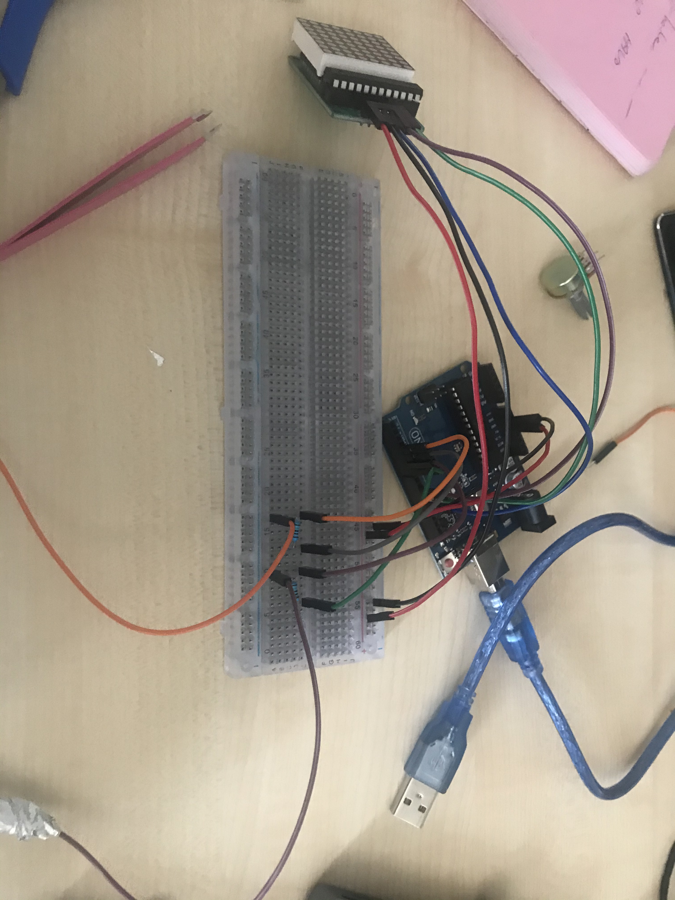
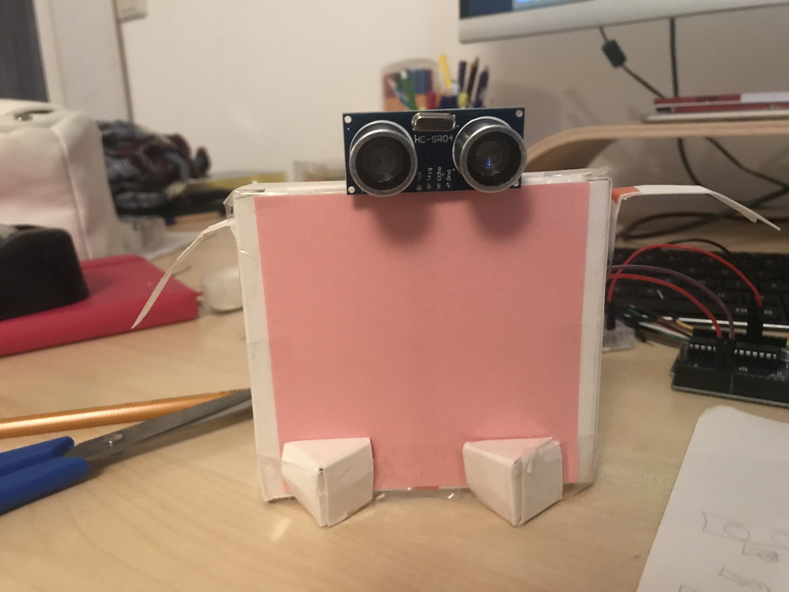
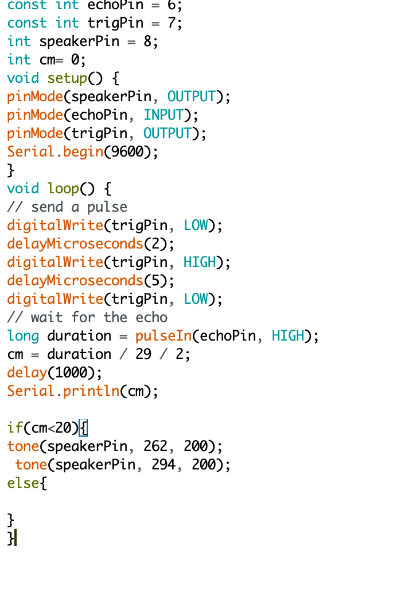

Challenge 3
Research
Voor de research was het de bedoeling om naar leuke, interessante en/of bijzondere AR/VR projecten te kijken. Hieronder staan 3 projecten die mij aanspreken.
Spoon
Spoon is een (Franse) robot die eruitziet als een kunstmatig huisdier. Het past zich aan, aan de omgeving en heeft emoties. Het doel van de robot is om de mens-machine verbinding natuurlijker te maken. De maker van de robot is Jérôme Monceaux en zijn team. De robot bestaat uit een ruggengraat met daarop een interactief hoofd. Wat ik bijzonder vind aan dit project is dat de robot bijna echt lijkt, het reageert op een natuurlijke ‘echte’ manier. Ook vind ik het leuk dat de robot met je meebeweegt en je bewegingen volgt wat voor extra speelse interactie zorgt.
Credits: Het bedrijf Spoon
Website: http://spoon.ai//
BionicFlyingFox
BionicFlyingFoox is een kunstmatige vleermuis. Door de combinatie van ingebouwde elektronica met een externe bewegingsregistratie hebben ze een kunstmatige vleermuis gecreëerd die kan bewegen/vliegen. Ze beschrijven het als een ultralichte vliegend object. Het project is gecreëerd door het bedrijf Festo. Wat ik leuk vind aan dit project is dat ze iets gecreëerd hebben dat kan vliegen, maar waarbij het heel realistisch lijkt. De robot en de bewegingen lijken op een echte vleermuis. Het is erg cool dat ze dat hebben kunnen creëren.
Credits: Festo
Website: https://www.festo.com/group/en/cms/13130.htm
Robotarm
In dit project is met behulp van een robotarm en een endoscoopcamera, een arm gemaakt die objecten van verschillende kleuren kan volgen. Er is gebruik gemaakt van arduino en processing. De camera volgt een object, en wanneer het object aan de rechterkant zit van het middelpunt gaat de robotarm ook naar rechts (hetzelfde voor links). Wat ik leuk vind aan dit project is dat je dus met je eigen bewegingen een ander voorwerp kan besturen. En het ook een project is wat ik zelf ook mogelijk zou kunnen maken.
Credits: Calmac Projects
Website: https://calmacprojects.wordpress.com/2017/08/07/computer-vision-with-processing-and-arduino/
Tinkering
Demo 1
Code
Show
Voor de eerste demo heb ik een robot gemaakt die reageert op aanraking en hierbij aangeeft of hij het fijn vindt. Het is een robot die het wel fijn vindt als je zijn rug aanraakt, hierbij geeft hij een blij gezicht. Maar hij vindt het niet fijn als zijn buik wordt aangeraakt, hierbij geeft hij een verdrietig/boos gezicht. Bij deze demo heb ik gebruik gemaakt van de Led-matrix, arduino een doosje, en de draadjes en aluminium voor de touch sensors.
Demo 2

Code
Show
Voor de tweede demo heb ik ook een robot gemaakt. Deze robot kan je bedienen met 2 knoppen, de ene knop zorgt ervoor dat de armen omhooggaan en het blije gezichtje van de robot zichtbaar is. De andere knop zorgt ervoor dat de armen weer naar beneden gaan, waardoor het gezicht niet meer zichtbaar is. Voor deze demo heb ik gebruik gemaakt van de Led-matrix, arduino, 2 servo motors, 2 knoppen, een doosje en roze papier.
Demo 3
Code
Show
Voor de derde en laatste demo heb ik een soort autotje gemaakt met 2 wielen, die bestuurd wordt door een knop. Wanneer er op de knop gedrukt wordt gaat de het autotje rijden. Voor de wielen heb ik gebruik gemaakt van rollen plakband. Verder heb ik gebruik gemaakt van de arduino, een knop, 2 servo motors en een doosje. Ook heb ik aan de onderkant potloden geplakt om te zorgen dat de auto in evenwicht blijft.
Design and Build
Proces
Code
Voor de derde challenge heb ik een balie robot gemaakt. In deze tijd is het natuurlijk de bedoeling om anderhalve meter afstand te houden van elkaar. Sommige balies maken geen gebruik van een plastic screen, om wat voor reden dan ook. Hierbij kunnen sommige klanten die bij de balie komen het nog wel eens vergeten dat ze afstand moeten houden, en voor de medewerkers kan het soms ongemakkelijk zijn om hier iets van te zeggen. Om deze redenen heb ik een balie robot gemaakt. Wanneer een klant te dichtbij komt, maakt de robot een geluid en weergeeft hij via een scherm dat er aftstand gehouden moet worden.